12.终端管理¶
云桌面1.7版本新增了终端管理功能，由于上课时学生相对固定，要求学生用学号和密码登陆不免繁琐，所以新增了终端管理功能。注册成功的终端可以在上课时直接启动对应课室的桌面，在该课室的学生可免用账号密码登陆。
当课室的终端被管理员锁定时，学生将无法最小化和关闭客户端。
管理员可通过一键关机来实现批量关闭课室的终端。
12.1.课室/终端组¶
“课室 / 终端组” 管理中，针对教育版主要是课室的管理，管理员在此页添加管理学校教室，通过教室将 课程——教室——终端（学校电脑） 联系起来，在该教室的终端可以在课程上课时候免用账号密码登陆。
在 <课室 / 终端组> 页面中，可对课室进行添加、删除、修改、搜索操作，操作按钮分布参考图12-1-1.
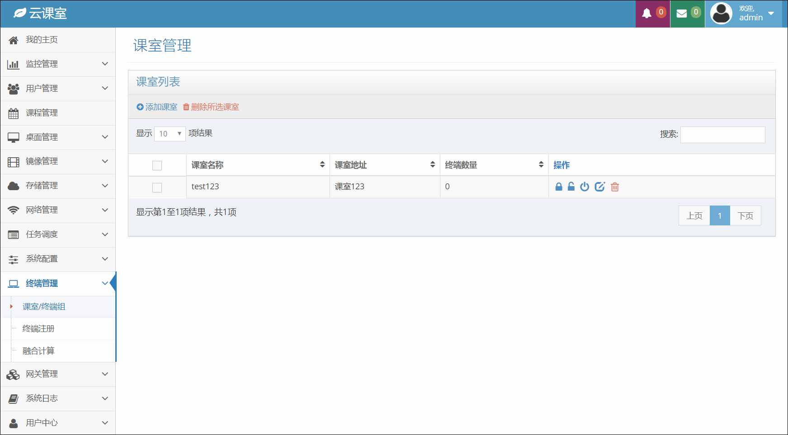图12-1-1 课室管理界面
{kind=link}
12.1.1.添加课室¶
{kind=link}
12.1.2.删除课室¶
在 <课室管理> 页，删除课室有两种方法，一种是通过搜索找到要删除的课室，在表格右侧的操作按钮中点击 【删除】，在弹出的 <确认删除> 窗口中点击 【确认】 可完成操作。另一种方法是通过表格前的复选框选中要删除的课室，点击表格左上方的 【删除所选课室】 按钮，在对话框中确认后可完成操作。
12.1.3.修改课室¶
{kind=link}
12.1.4.锁定课室终端¶
{kind=link}
{kind=link}
{kind=link}
12.2.课室终端-图表显示¶
用户点击课室列表中的课室名称后，页面将跳转到该课室的已注册终端列表，首次打开默认选择图表显示。点击页面右上方的 【列表显示】 切换按钮，终端列表将显示为列表状态。
在终端的图表页面中，未锁定的终端显示为 绿色，锁定的终端显示为 橙色，页面终端还会出现浅绿色和浅橙色。浅绿色代表终端与系统不一致（异常）的情况，此时终端未锁定，有可能是终端未开机或者终端出错无法执行系统的锁定命令等。浅橙色参考浅绿色的功能提示。当鼠标移上某一终端时，将出现该终端的描述，包括：座位号，Mac地址，系统状态，终端描述，状态更新时间。
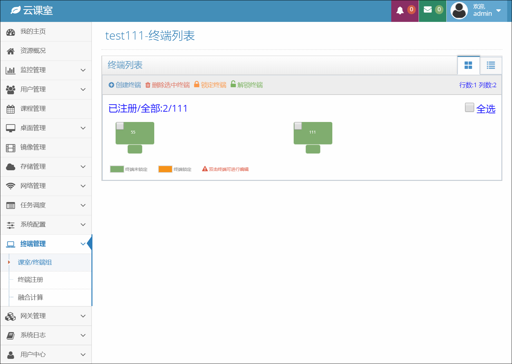图12-1-8 课室终端-图表显示
{kind=link}
12.2.1.创建终端¶
在课室终端图表的上方点击 【创建终端】 按钮，系统弹框 <创建终端>，填写座位号、MAC地址以及终端描述（可忽略），点击弹框中的 【添加】 按钮，即可完成创建终端操作。
注：创建终端等同于注册终端。
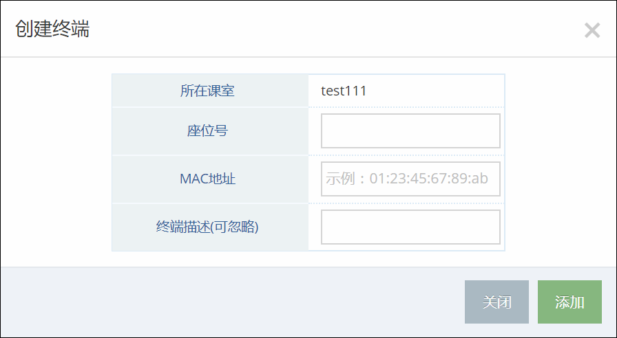图12-2-1 创建终端
{kind=link}
12.2.2.删除选中终端¶
在终端图表页面，勾选需要删除的终端或点击 “全选” 选框，取消不删除的终端，点击页面左上方的 【删除选中终端】 按钮，系统弹框删除终端确认按钮，点击 【确认】 按钮，即可完成终端删除的操作。
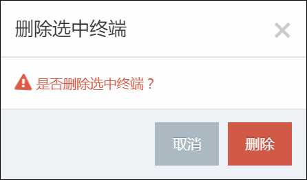图12-2-2 删除终端
{kind=link}
12.2.3.锁定终端¶
在终端图表页面，勾选需要锁定的终端或点击 “全选” 选框，取消已锁定的终端，点击页面左上方的 【锁定终端】 按钮，系统弹框锁定终端确认按钮，点击 【确认】 按钮，即可完成锁定终端的操作。
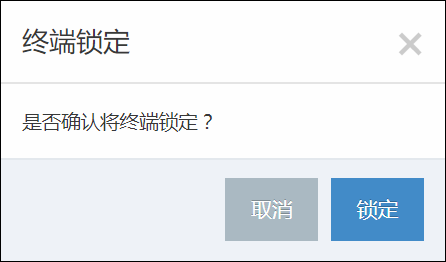图12-2-3 锁定终端
{kind=link}
12.2.4.解锁终端¶
解锁终端和锁定终端操作相似，请参考12.2.3.锁定终端操作
{kind=link}
{kind=link}
12.3.课室终端-列表显示¶
在终端图表页面的右上方，点击 【列表显示】 按钮，终端页面将以列表方式显示，终端列表页面将显示 座位号、MAC地址、终端描述、系统状态、终端状态、状态更新时间 以及 操作 按钮。
系统状态 是指系统对终端做出的锁定或者未锁定操作。终端状态 指的是终端反馈给系统，是否锁定。
当系统状态与终端状态不一致时，页面将出现警示色，提示用户终端状态异常。
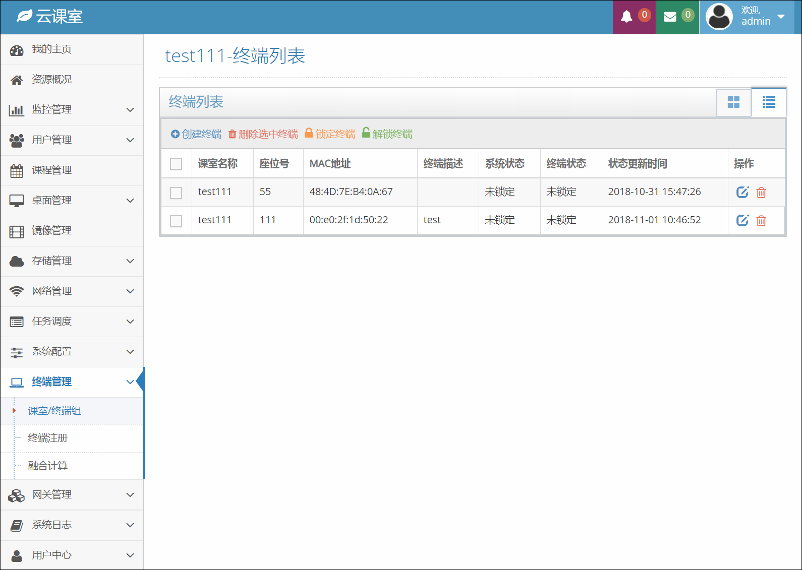图12-3-1 课室终端-列表显示
{kind=link}
12.3.1.创建、删除、锁定、解锁终端¶
终端列表页面的创建、删除、锁定以及解锁终端功能说明请参考12.2.课室终端-图表显示中的相关说明。
12.3.2.编辑终端¶
12.4.终端注册¶
客户端安装完成后，可以点击终端注册，此时客户端会向系统发送一个注册请求，管理员在 <终端注册> 页会看到 新的注册申请、已注册的终端、已拒绝的终端申请。
12.4.1.已注册¶
{kind=link}
{kind=link}
{kind=link}
12.4.3.已拒绝¶
对已经拒绝的终端注册，如果是错误拒绝管理员可以在 <已拒绝> 页中通过该申请，如果是正确拒绝的申请管理员可以在此页进行删除操作。
12.5.融合计算¶
融合计算功能是为了综合利用云服务器和本地终端计算能力，通过融合计算，重量级应用可以通过映射在云桌面启动和使用，运行环境实为本地机，从而保证用户使用计算和图形密集型应用时有良好的体验。在 <融合计算> 界面中，包括 “策略列表” 和 “终端程序”。
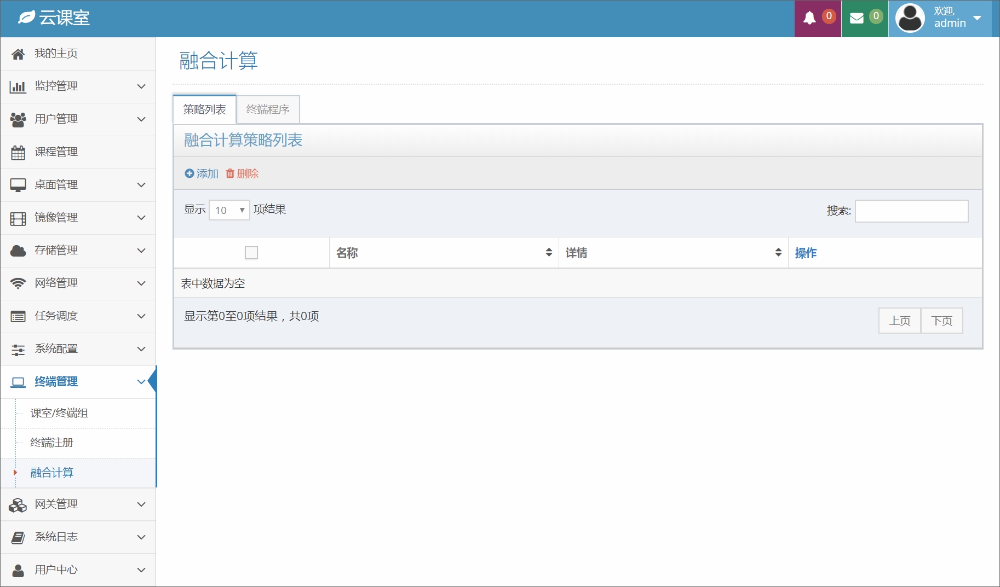图12-5-1 融合计算页面
{kind=link}
12.5.1.添加策略¶
在 <融合计算> 的策略列表界面中，点击 【添加】 按钮，会弹出 <创建计算策略> 弹窗，输入策略的 “名称”，选择程序，点击弹窗的 【添加】 按钮，即可实现创建操作。如图12-5-2。
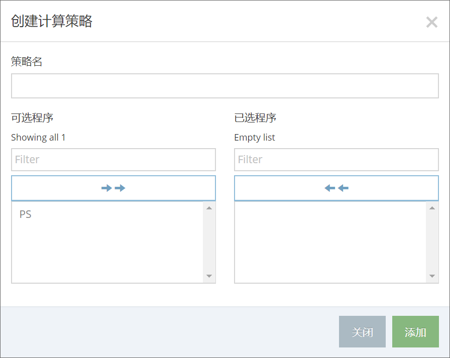图12-5-2 添加策略
{kind=link}
12.5.2.删除策略¶
在 <融合计算> 的策略列表界面中，点击目标策略操作中的 【删除】 按钮，系统会弹出 <删除策略> 弹窗，点击弹窗的 【删除】 按钮，即可实现删除操作。如图12-5-3。批量删除操作可参考上述。
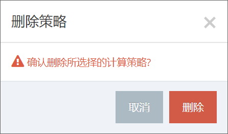图12-5-3 删除策略
{kind=link}
12.5.3.编辑策略¶
在 <融合计算> 的策略列表界面中，点击目标策略操作中的 【编辑】 按钮，系统会弹出 <编辑计算策略> 弹窗，修改策略名称，更新已选程序，点击弹窗的 【更新】 按钮，即可实现编辑操作。
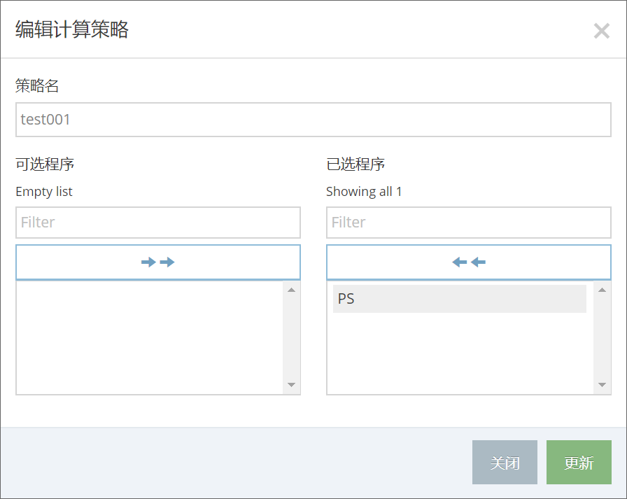图12-5-4 编辑策略
{kind=link}
12.5.4.添加终端程序¶
在 <融合计算> 的界面中，点击 “终端程序” 栏目，可以看到所有的终端程序列表，点击 <终端程序> 页面中的 【添加】 按钮，会弹出 <创建终端程序> 弹窗，输入程序的 “名称”，输入程序的安装路径，上传程序的图标（.ico格式），点击弹窗的 【更新】 按钮，即可实现创建操作。
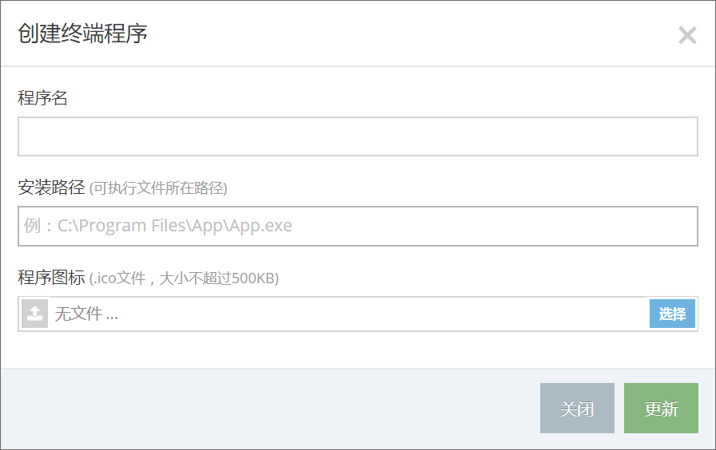图12-5-5 添加终端程序
{kind=link}
{kind=link}
{kind=link}